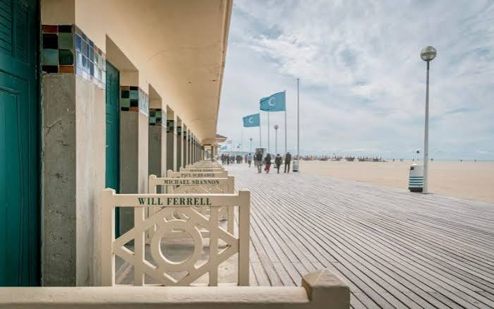
Bord de mer
Les Planches
Promenez-vous sur la célèbre promenade en bois de Deauville, bordée de cabines portant les noms de grandes figures du cinéma.
l'élégance de la Côte Fleurie
Présentation
Deauville séduit par son architecture, sa plage et son atmosphère élégante. Des célèbres Planches aux villas de la Belle Époque, la ville se découvre aussi bien pour une promenade en bord de mer que pour une escapade culturelle.
À ne pas manquer

Promenez-vous sur la célèbre promenade en bois de Deauville, bordée de cabines portant les noms de grandes figures du cinéma.
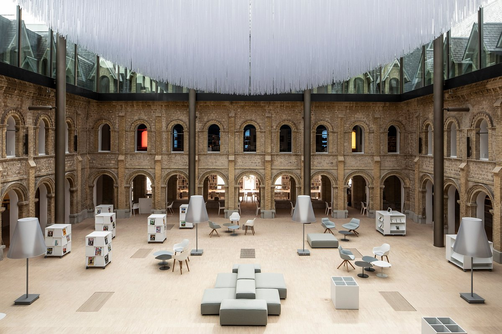
Découvrez ce lieu culturel installé dans un ancien couvent, entre expositions, musée, médiathèque et histoire de Deauville.
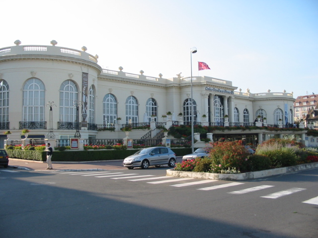
Admirez l’emblématique casino de Deauville et son architecture, au cœur de la station balnéaire.

Découvrez l’un des hôtels les plus emblématiques de Deauville, reconnaissable à ses façades à colombages et son style anglo-normand.
Saveurs
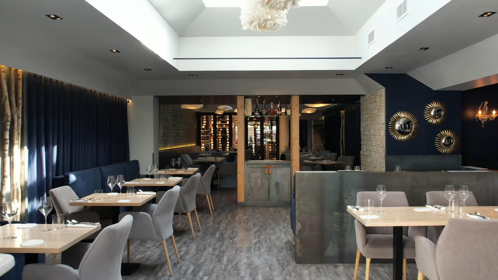
Une table raffinée qui propose une cuisine créative autour de produits de saison.
Découvrir l'adresse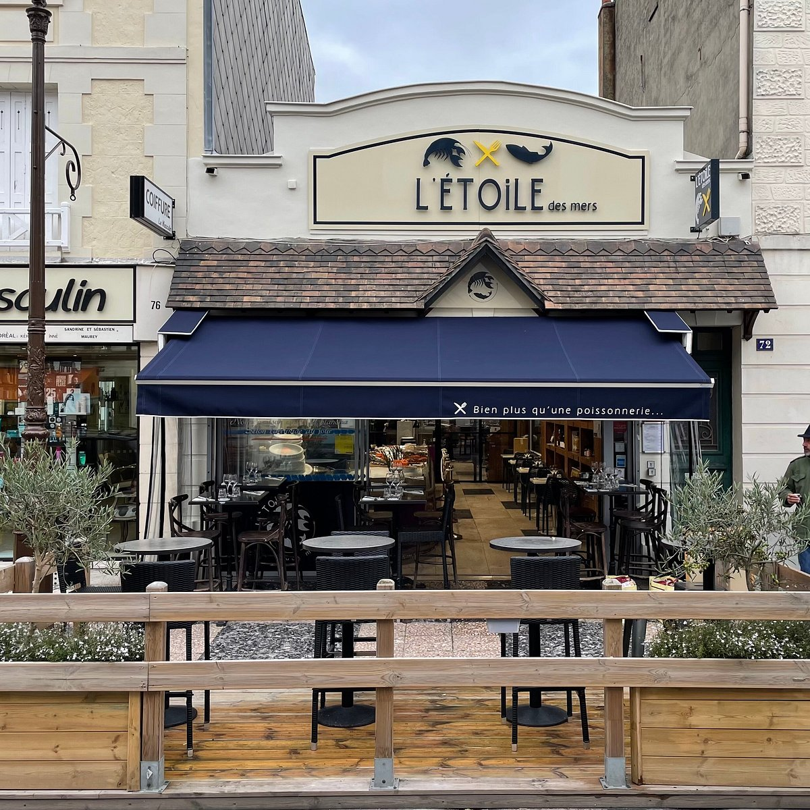
Une adresse tournée vers les produits de la mer, parfaite pour découvrir huîtres, poissons et autres spécialités normandes.
Découvrir l'adresse →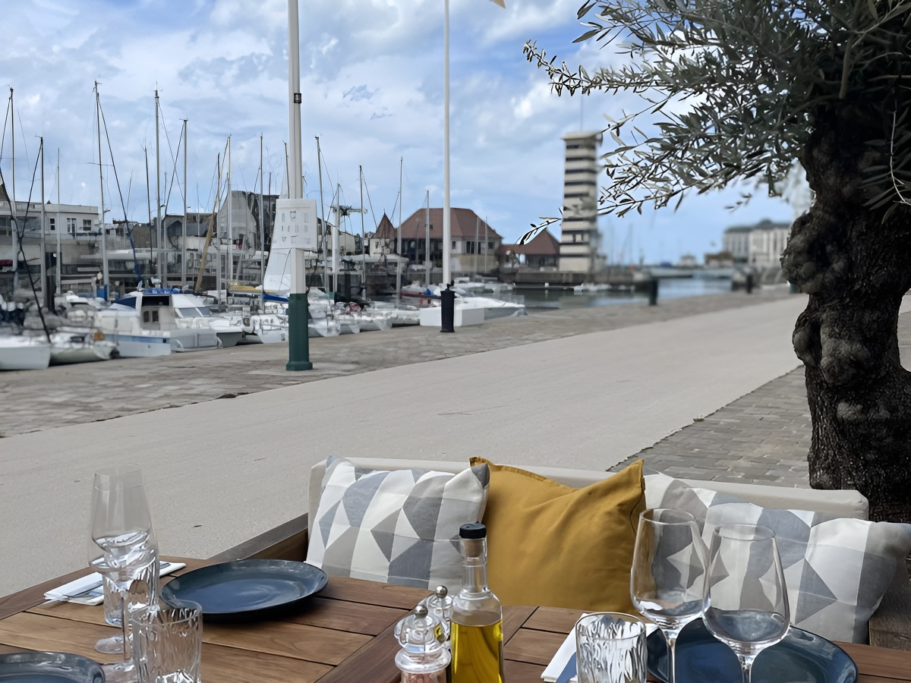
Une table conviviale proposant une cuisine française soignée au cœur de Deauville.
Découvrir l'adresse →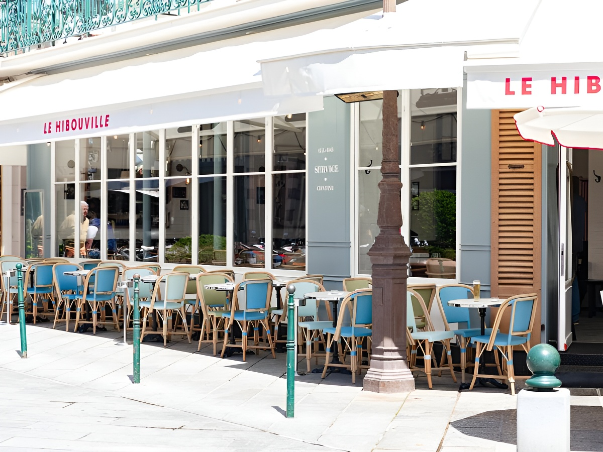
Une adresse animée sur la place de Morny, idéale pour manger ou prendre un verre au cœur de Deauville.
Découvrir l'adresse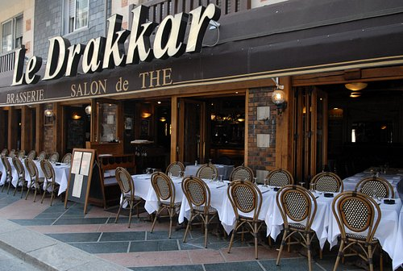
Une adresse incontournable pour les amateurs de fruits de mer, avec une vue imprenable sur la mer.
Découvrir l'adresse →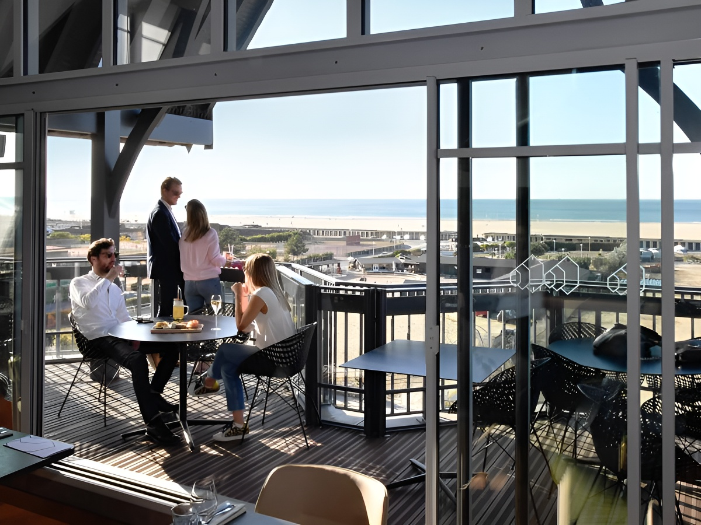
Une table conviviale située face au port, proposant une cuisine française dans un cadre agréable.
Découvrir l'adresse →Coups de cœur
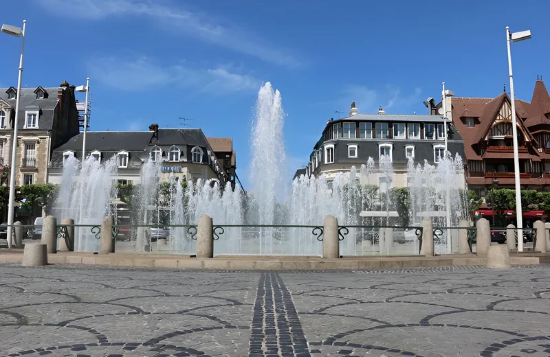
Flânez sur cette place centrale entourée de commerces, véritable point de rencontre au cœur de Deauville.
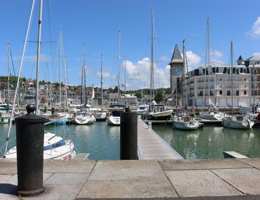
Flânez autour du bassin Morny et profitez de l’ambiance maritime au cœur de Deauville.
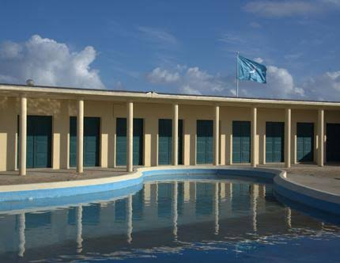
Profitez de ces installations aquatiques pour vous rafraîchir au cœur de Deauville.
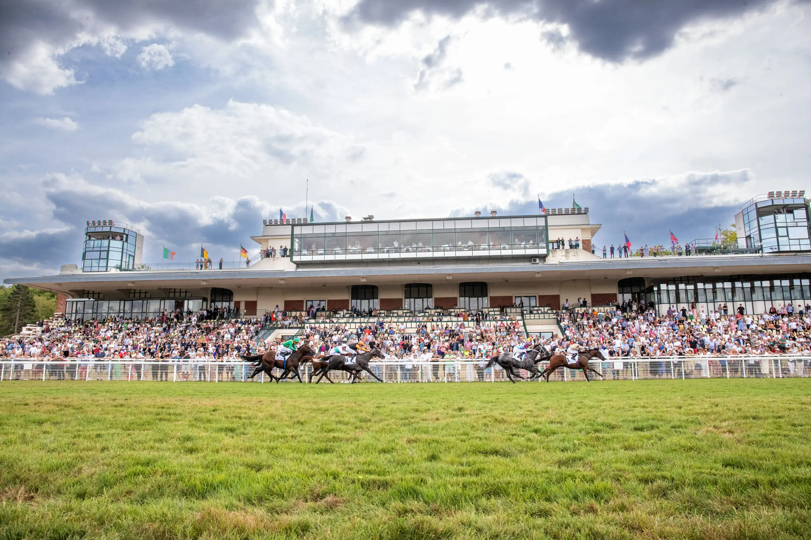
Découvrez l’univers des courses hippiques dans cet hippodrome historique situé au cœur de Deauville.
Explorez Deauville